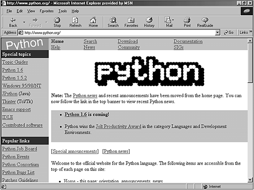

| < BACK | Make Note | Bookmark | CONTINUE > |
PSA and the Python Consortium
The Python Software Activity (PSA) was established by CNRI Inc. to be the home of Python and to guide its development according to the common interests of the Python development community. A large number of contributions are submitted periodically. The PSA Web site stores the official documentation and download area of Python distributions. PSA's creation has taken some of the responsibility that Guido had. As a result, a group is working to develop Python, instead of just one man. This fact helps propagate the maturity of Python's development strategy.
You can obtain more information about the PSA by visiting its official home page at http://www.python.org (see Figure 1.4). That is the place where all the information about Python gets officially organized and published. Note that with the move of Guido and his team to PythonLabs, the future of PSA is uncertain. The information currently available says that CNRI, which manages the existing PSA, will determine its future at the end of the current membership term, on October 1, 2000.
Figure 1.4. The Python Software Activity (PSA) official home page.
Several Special Interest Groups (SIGs), hosted by PSA, are currently studying and developing special topics of Python, such as XML Processing, String Processing, Python in Education, Distributed Objects, and many other important topics. To find out what newest groups are being formed and to participate in the discussions that are conducted in their mailing lists, take a look at http://www.python.org/sigs/. Much of Python's real work takes place on Special Interest Group mailing lists.
Behind the PSA, a group of companies and individuals helps to propagate the Python voice. They work together, creating conferences and keeping their Web site up-to-date. If you want to be part of the PSA, get more details at http://www.python.org/psa/.
After you become a member of the PSA, you are eligible to have an account on the Web site http://starship.python.net.
Today, this site is filled with information provided by many Python developers from all around the world.
On Oct 25, 1999, the Python Consortium was publicly announced and officially began its mission "to ensure Python's continued support and development."
The membership fees that are received by the Consortium members support the development of Python and JPython. Many organizations have already registered as part of the Consortium (for more information, see http://www.python.org/consortium/).
The Corporation for National Research Initiatives (CNRI) is a nonprofit organization that hosts the Python Consortium. Check out its Web site at http://www.cnri.reston.va.us/.
Even with his transition to PythonLabs, Guido van Rossum remains the Technical Director of the Python Consortium, and BeOpen.com continues to be just a member.
Support and Help
Python has a Usenet newsgroup called comp.lang.python. This newsgroup is an excellent source of Python information and support. The guys who really know the language always hang out there.
One of the best ways to keep yourself up-to-date to the Python world is to sign up for the Python general mailing lists and to always check the newsgroup for some information that might be helpful for you.
Go to http://www.python.org/psa/MailingLists.html and look for the list that provides the level of information that you need. At this time, there are four main mailing lists:
Tutor is a list for beginners who have basic knowledge and need simple and straight answers.
JPython is a list that openly discusses the Python implementation for Java.
Announcements is a list that doesn't have huge traffic. The objective of this list is just to publish important notices to the Python community.
An open discussion mailing list generates an average of 100 daily messages and covers everything related to general Python discussion topics.
Python Conferences and Workshops
The Python community has organized many workshops and conferences to discuss Python hot topics. You can have access to the materials that were used for the presentations, and you can also download many technical documents provided by the people who have participated in the conferences and workshops.
For more details about the latest events and upcoming ones, check out the Web page at http://www.python.org/workshops/.
| Last updated on 1/30/2002 Python Developer's Handbook, © 2002 Sams Publishing |
| < BACK | Make Note | Bookmark | CONTINUE > |